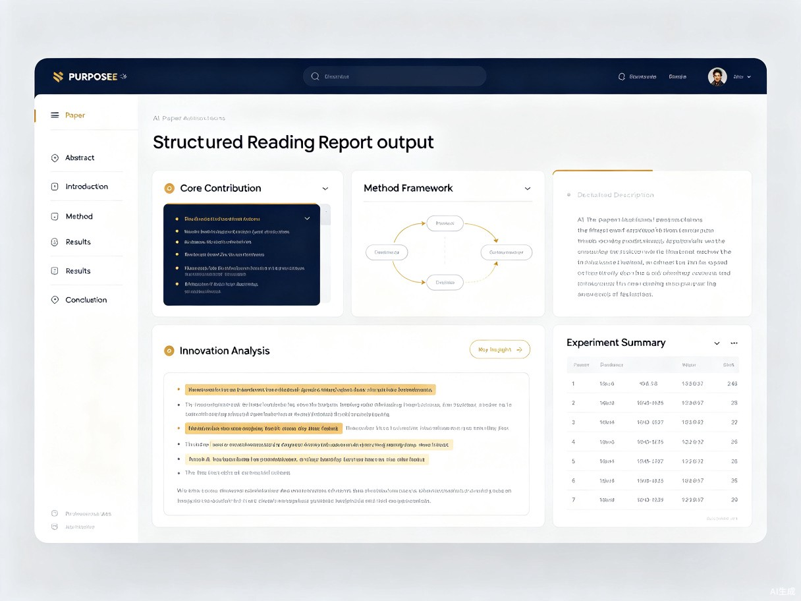

AI论文精读助手 —— 像一位有经验的学长，帮你提纲挈领地读懂每一篇论文
PaperMind 是一款面向科研人员与学生的 AI 论文精读助手 Web 应用。它致力于解决一个长期困扰学术界的痛点：科研人员和学生在阅读英文文献时，常常被专业术语、复杂句式和海量信息淹没，一篇论文动辄花费数小时，却难以快速抓住核心贡献和方法创新点。
作为一个经常需要跟进前沿研究的人，我们深知读论文的痛苦——打开一篇新论文，从摘要到结论，逐字逐句啃下来，读完还是一头雾水。尤其是跨领域论文，术语不熟、背景不清，反复回看还容易卡在某一段落。PaperMind 正是为了解决这一痛点而生。
产品形态是一个 轻量级的网页应用（Web App）。用户只需上传 PDF 论文或输入 arXiv 链接，AI 即可自动生成结构化精读报告，包括核心贡献、方法框架、实验结果和创新点分析。用户可以先快速浏览 AI 生成的精读报告，建立对论文的整体认知，再有针对性地深入阅读自己关心的部分。

PaperMind 主要面向以下四类用户群体：
需要大量阅读文献进行文献综述，但时间有限，希望快速筛选出真正值得深读的论文。
需要持续跟进领域前沿，每天面对大量新发表论文，需要高效获取核心信息。
需要快速了解陌生领域的研究进展，但缺乏该领域的术语和背景知识储备。
需要了解某项技术的最新研究状态，以评估技术选型和落地可行性。
PaperMind 在以下场景中发挥最大价值：
在没有 AI 辅助的情况下，用户面临以下核心痛点：
PaperMind 的价值体现在 效率提升 和 社会价值 两个维度：
将精读一篇论文的时间从 2-3 小时压缩到 30 分钟以内。AI 生成的结构化报告帮助用户在 5 分钟内建立对论文的整体认知，后续 25 分钟可以带着明确的问题去细读关键章节。让研究者把时间花在思考和创新上，而不是信息筛选上。
通过 AI 对论文的结构化拆解，用户不仅能快速获取信息，还能学习如何分析一篇论文的框架——核心问题是什么、方法如何设计、实验如何验证。长期使用有助于提升用户自身的学术阅读能力。
降低学术研究的入门门槛，帮助更多研究者和从业者跟上领域前沿。尤其是来自资源相对匮乏地区或机构的研究者，PaperMind 让他们也能平等地获取和理解最新的学术成果，促进知识流动和学术交流的平民化。
随着用户量的增长，PaperMind 可以积累大量论文的分析数据，进而构建领域知识图谱，帮助研究者发现研究趋势、识别关键论文、找到潜在的合作方向。
PaperMind 采用模块化架构设计，确保处理流程的可靠性和可扩展性：
flowchart LR
A[用户上传PDF
或输入arXiv链接] --> B[文档解析引擎]
B --> C[文本提取与
结构识别]
C --> D[AI分析引擎]
D --> E1[核心贡献提取]
D --> E2[方法框架解析]
D --> E3[实验结果总结]
D --> E4[创新点分析]
E1 --> F[结构化报告生成]
E2 --> F
E3 --> F
E4 --> F
F --> G[交互式阅读界面]
G --> H[用户反馈与
报告优化]
| 模块 | 功能描述 | 用户价值 |
|---|---|---|
| 智能解析引擎 | 自动识别论文结构（摘要、引言、方法、实验、结论） | 无需手动标注，即传即分析 |
| 核心贡献提取 | 用 3-5 句话概括论文的核心问题和主要贡献 | 5 秒了解论文价值 |
| 方法框架解析 | 将复杂方法拆解为步骤流程图，标注关键公式和参数 | 快速理解技术实现路径 |
| 实验结果总结 | 提取关键实验数据、对比基线、显著性结论 | 一眼看清论文的实证支撑 |
| 创新点分析 | 对比相关工作，指出论文的差异化创新之处 | 理解论文在领域中的定位 |
| 术语注释 | 对跨领域术语提供简明解释和背景链接 | 消除跨领域阅读障碍 |
研究生在选题阶段需要阅读 50+ 篇论文，使用 PaperMind 快速生成每篇论文的精读报告，30 分钟内筛选出 5-8 篇核心文献进行深读。
产品经理需要评估"大模型推理优化"技术的可行性，通过 PaperMind 快速读懂 3-5 篇顶会论文，形成技术调研报告。
博士生每周需要汇报一篇论文，使用 PaperMind 在 20 分钟内生成结构化汇报提纲，包含核心贡献、方法流程和实验亮点。
研究员订阅 arXiv 每日更新，使用 PaperMind 批量处理新论文，快速识别与自己研究方向高度相关的工作。